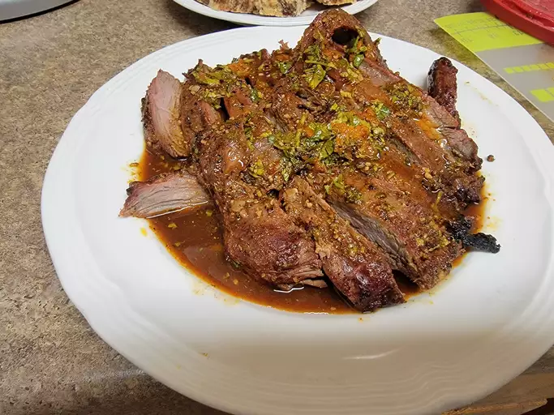

Lisa's Favorite Carne Asada Marinade

Description
This carne asada marinade is our family's favorite — and I've tried many! A 24-hour soak in a spicy citrus and
soy marinade ensures your flank steak will be perfectly tender when it comes off the grill.
A juicy and flavorful carne asada starts with a delicious carne asada marinade. This recipe begins with a 24-hour
marinade to allow the flank steak to soak up all the tasty and fresh flavors before grilling.
Whether you serve it as tacos, a salad topping, or simply chow down on the tender, flavor-packed steak by itself,
this will be the best carne asada you've ever experienced.
Ingredients
- 3/4 cup orange juice
- 1/2 cup lemon juice
- 1/3 cup lime juice
- 1 bunch fresh cilantro, chopped
- 1/2 cup soy sauce
- 4 cloves garlic, minced
- 1 tablespoon ground cumin
- 1 tablespoon around paprika
- 1 tablespoon ground bell pepper
- 1 teaspoon finely chopped canned chipotle pepper
- 1 teaspoon dried oregano
- 1/2 cup olive oil
- 3 pounds of flank steak
Steps
- Combine orange juice, lemon juice, and lime juice for marinade in a large glass or ceramic bowl. Add
cilantro, soy sauce, garlic, chili powder, cumin, paprika, black pepper, chipotle pepper, and oregano; stir
to combine.
- Slowly whisk in olive oil until well combined. Remove 1 cup of the marinade and place in a small bowl; cover
with plastic wrap and refrigerate for use after the steak is cooked.
- Place steak between two sheets of heavy plastic (resealable freezer bags work well) on a solid, level
surface. Firmly pound steak with the smooth side of a meat mallet to a thickness of 1/4 inch.
- After pounding, poke steak all over with a fork. Place steak in the marinade in the large bowl, cover, and
marinate in the refrigerator for 24 hours.
- When ready to cook, preheat an outdoor grill for medium-high heat, and lightly oil the grate.
- Remove steak from the marinade and shake off excess. Discard the remaining marinade.
- Cook steak on the preheated grill to desired doneness, about 5 minutes per side for medium-rare.
- Remove steak from grill and slice across the grain.
- Place on a serving platter and pour the reserved, unused marinade over top. Serve immediately.